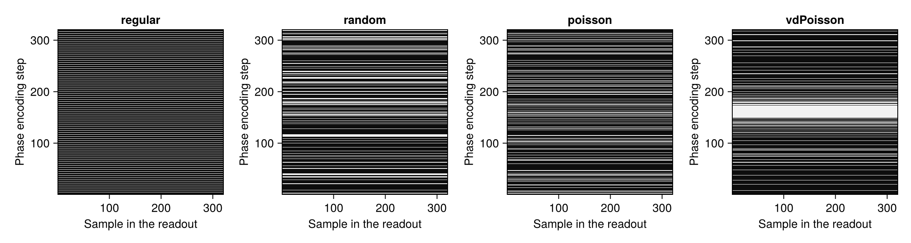
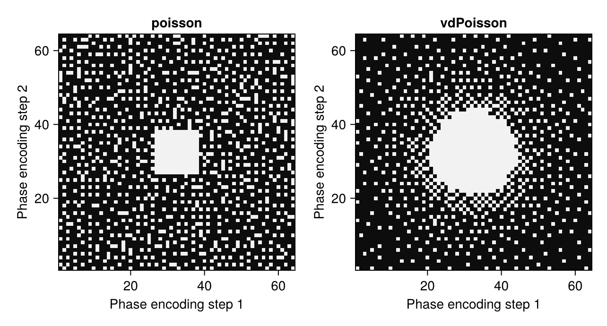

Undersample k-Space
Reconstruction methods for undersampled data are often tested on fully sampled data from which samples are removed afterwards. MRISampling does this for Cartesian data with sample_kspace. This guide shows how to choose a sampling pattern, keep the center of k-space, make the pattern reproducible and undersample 3D data and data with several contrasts. Data Model explains how AcquisitionData stores the sampling pattern.
Choosing a Pattern
sample_kspace takes the data, the reduction factor and the name of a pattern and returns the undersampled data as a new object. The example keeps a quarter of the knee data from Direct Reconstruction:
using MRIReco, MRIFiles, MRISampling
using Pkg.Artifacts
artifacts = joinpath(pkgdir(MRIReco), "docs", "Artifacts.toml")
datadir = ensure_artifact_installed("MRIRecoDocsData", artifacts; io = devnull)
acqData = AcquisitionData(ISMRMRDFile(joinpath(datadir, "knee_3dFSE_slice170.h5")))
acqDataSub = sample_kspace(acqData, 4.0, "poisson", seed = 1234)
size(acqData.kdata[1]), size(acqDataSub.kdata[1])((102400, 8), (25600, 8))By default, the pattern keeps complete profiles, here 80 of 320, as an accelerated acquisition would. The number of kept profiles is the number of profiles divided by the reduction factor, rounded down. Pass the factor as a floating-point number, such as 4.0, because the random patterns do not accept an integer. There are four patterns:
"regular"keeps every n-th profile, as in a conventional parallel imaging acquisition. Use a whole number as the factor, because other factors leave the end of k-space unsampled."random"chooses the profiles at random."poisson"chooses the profiles at random but keeps a minimum distance between them as long as there is room left, which is known as Poisson-disk sampling."vdPoisson"is a Poisson-disk pattern with variable density, which keeps more profiles near the center of k-space.
The docstring also lists "lines", the pattern that sample_kspace uses internally to keep complete profiles. The following figure shows the four patterns for the knee data:
using CairoMakie
fig = Figure()
for (i, name) in enumerate(["regular", "random", "poisson", "vdPoisson"])
data = sample_kspace(acqData, 4.0, name, seed = 1234)
mask = zeros(320, 320)
mask[data.subsampleIndices[1]] .= 1
ax = Axis(fig[1, i], title = name, width = 200, height = 200,
xlabel = "Sample in the readout", ylabel = "Phase encoding step")
heatmap!(ax, mask, colormap = :grays)
end
resize_to_layout!(fig)
fig
Keeping the Center of k-Space
Some methods need a fully sampled region in the center of k-space. In Multi-Coil Reconstruction, for example, ESPIRiT estimates the coil sensitivities from this region. For "random" and "poisson", the keyword calsize sets the number of central profiles that are always kept. The other profiles follow the pattern, and the reduction factor stays the same:
acqDataCal = sample_kspace(acqData, 4.0, "poisson", calsize = 30, seed = 1234)
profiles = unique(fld1.(acqDataCal.subsampleIndices[1], 320))
length(profiles), all(in(profiles), 146:175)(80, true)calsize must not exceed the number of kept profiles. "regular" and "vdPoisson" ignore the keyword.
Reproducible Patterns
The random patterns differ from call to call. The keyword seed fixes them, so that a result can be reproduced:
a = sample_kspace(acqData, 4.0, "poisson", seed = 1234)
b = sample_kspace(acqData, 4.0, "poisson", seed = 1234)
a.subsampleIndices == b.subsampleIndicestrueseed also resets Julia's default random number generator, so random numbers that are drawn afterwards repeat as well. To avoid this, pass a generator of your own as rng, which seed then seeds instead.
3D Data and Single Samples
For 3D data, sample_kspace chooses complete readouts in the plane of the two phase encoding directions, so the patterns are two-dimensional. "regular" keeps every n-th point of this plane, counting along the first phase encoding direction. sample returns such a pattern without applying it to data, as a vector with the indices of the kept points of a grid:
idx = sample((64, 64), 4.0, "poisson", calsize = 12, seed = 1234)
length(idx)1024In two dimensions, calsize keeps a central square, here of 12 × 12 points, which must not contain more points than the pattern keeps. The "vdPoisson" pattern becomes slow for large grids. The following figure shows both Poisson-disk patterns:
fig = Figure()
for (i, (name, options)) in enumerate(["poisson" => (calsize = 12,), "vdPoisson" => (;)])
mask = zeros(64, 64)
mask[sample((64, 64), 4.0, name; seed = 1234, options...)] .= 1
ax = Axis(fig[1, i], title = name, width = 250, height = 250,
xlabel = "Phase encoding step 1", ylabel = "Phase encoding step 2")
heatmap!(ax, mask, colormap = :grays)
end
resize_to_layout!(fig)
fig
With profiles = false, sample_kspace uses such a two-dimensional pattern for 2D data as well and removes single samples instead of complete profiles, which treats a slice like the phase encoding plane of a 3D acquisition. The random patterns support this option only for 2D data.
Several Contrasts
For data with several contrasts, each contrast gets its own random pattern by default, and rand = false uses one pattern for all contrasts. Multi-Echo Reconstruction shows how this choice affects a joint reconstruction of the contrasts.
Other Kinds of Data
sample_kspace expects fully sampled Cartesian data whose samples are stored in the order of the k-space grid. For fully sampled data, this is the case if the indices of all contrasts are sorted, as for the knee data:
all(issorted, acqData.subsampleIndices)true- Data that is loaded from a file can be stored in another order.
sample_kspacethen assigns the kept samples to wrong k-space positions without an error (#352). Bring such data into the order of the grid first withAcquisitionData(kDataCart(acqData)), and addenc2D = truefor data with several slices. This resets the field of view and the sampling times, and it treats samples that are exactly zero in the first coil of the first slice and repetition as not measured. - Data that is already undersampled cannot be undersampled again with
sample_kspace. - For non-Cartesian data,
sample_kspaceremoves complete profiles from the k-space data but keeps all nodes of the trajectory (#353). Pass the result toconvertUndersampledData, which reduces the trajectory to the nodes of the kept samples:convertUndersampledData(sample_kspace(acqData, 4.0, "random")). - To apply a pattern of your own, set the samples that are not measured to zero in the k-space array, as shown in Extract Cartesian k-Space.
This page was generated using Literate.jl.